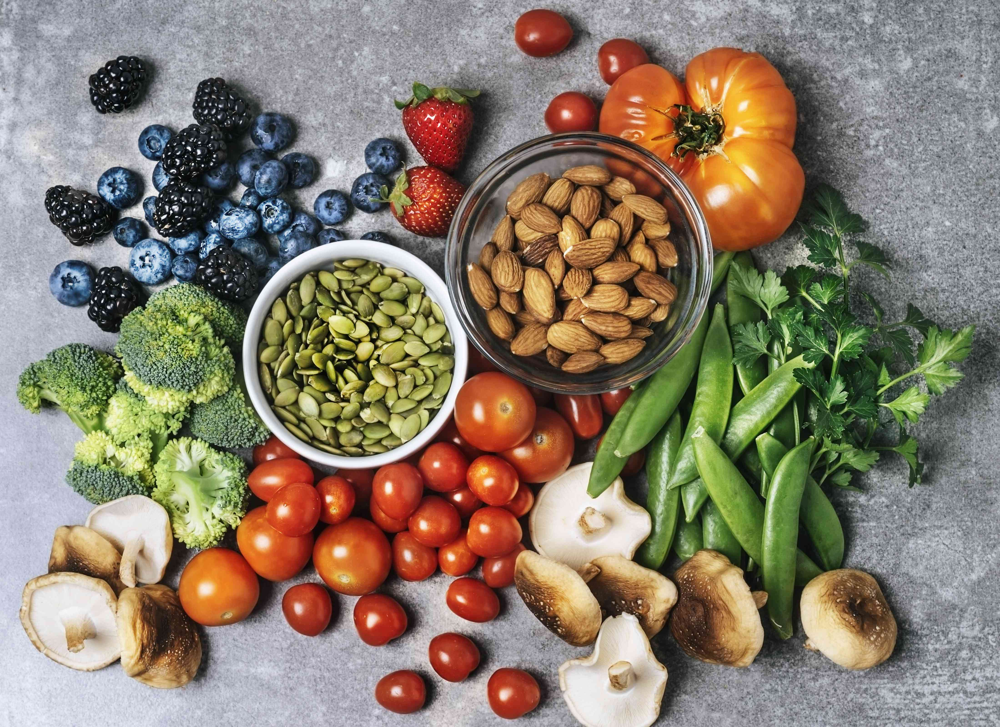
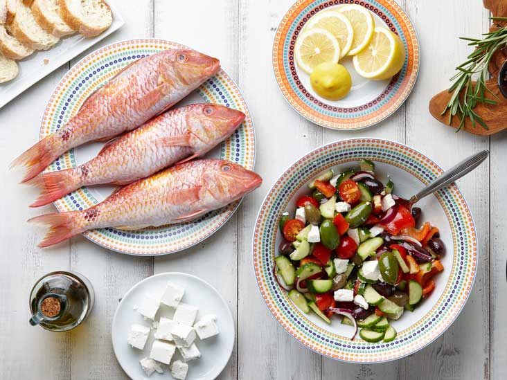
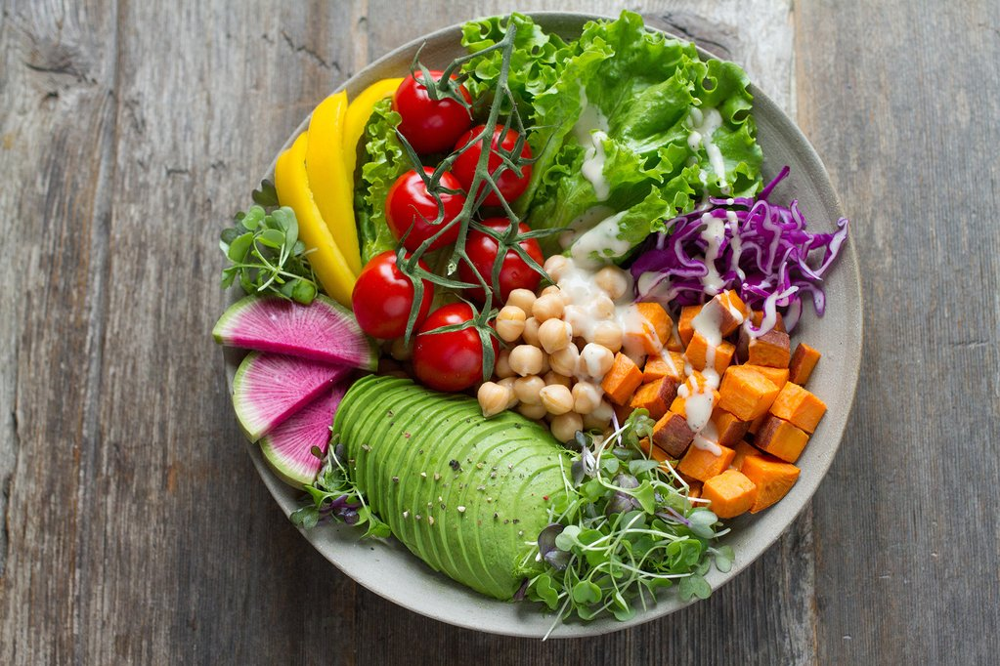
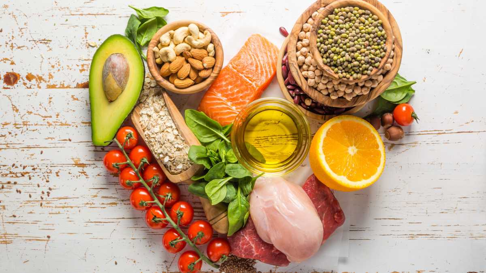
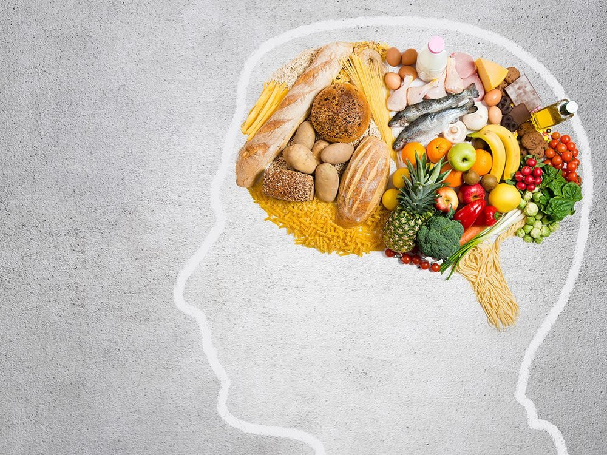

5 Best Diets for Healthy Eating
1. DASH Diet
What is DASH Diet?

The DASH diet, which stands for dietary approaches to stop hypertension,
is promoted by the National Heart, Lung and Blood Institute to do exactly
that: stop (or prevent) hypertension, aka high blood pressure. It emphasizes
the foods you've always been told to eat (fruits, veggies, whole grains,
lean protein and low-fat dairy), which are high in blood pressure-deflating
nutrients like potassium, calcium, protein and fiber.
DASH also discourages foods that are high in saturated fat, such as fatty
meats, full-fat dairy foods and tropical oils, as well as sugar-sweetened
beverages and sweets. Following DASH also means capping sodium at 2,300
milligrams a day, which followers will eventually lower to about 1,500
milligrams. DASH diet is balanced and can be followed long term.
A review of studies published in 2021in StatPearls, which calls itself
the largest library of medical education in the world, suggests that
the DASH diet is associated with lowering:
- Blood pressure.
- The risk of adverse cardiac events.
- Stroke.
- Type 2 diabetes.
- Obesity.
A study published in 2019 in Scientific Reports suggests that adhering to the
DASH diet is associated with “better metabolic profiles.” Researchers found
that, compared to metabolic healthy obesity, “greater adherence to the DASH
diet was associated with 21% lower odds of metabolic unhealthy obesity”
regardless of age, sex, energy intake, physical activity, body-mass index,
smoking and educational level.
What can I eat?

Easy omelette
Combine eggs, chives and reduced fat cheddar cheese into a quick breakfast that can provide you with a foundation for the day. You may also consider adding veggies, such as spinach or asparagus.
Bran flakes
Breakfast needn’t be complicated. Pour a bowl of bran flakes or shredded wheat, douse in low-fat milk and top with blueberries or sliced peaches to sweeten without added sugar.
Vegetable Kabobs
If you're looking for a vegetarian-friendly dish, throw together some vegetable kabobs. Great for parties or a night at home, these can be made on a grill or in an oven.
2. Mediterranean Diet
What is Mediterranean Diet?

It's generally accepted that the people living in countries bordering
the Mediterranean Sea live longer and suffer less than most Americans
from cancer and cardiovascular ailments. The not-so-surprising secret
is an active lifestyle, weight control and a diet low in red meat, sugar
and saturated fat and high in produce, nuts and other healthful foods.
The Mediterranean diet may offer a host of health benefits, including
weight loss, heart and brain health, cancer prevention, and diabetes
prevention and control. By following the Mediterranean diet, you could
also keep that weight off while avoiding chronic disease.
There isn't "a" Mediterranean diet. Greeks eat differently from Italians,
who eat differently from the French and Spanish. But they share many of
the same principles. Working with the Harvard School of Public Health
and the World Health Organization, Oldways, a nonprofit food think tank
in Boston, developed a consumer-friendly Mediterranean diet pyramid that
offers guidelines on how to fill your plate – and maybe wineglass – the
Mediterranean way.
What can I eat?
Buckwheat Pancakes
Top a small stack with sliced bananas or a cup of blueberries, and drizzle on a couple tablespoons of light maple syrup.

Greek Yogurt
Add strawberries or raspberries and a teaspoon of honey to sweeten. To make it a more complete breakfast, this can be paired with a slice of whole-grain toast "buttered" with smashed avocado.
Mediterranean Pasta Salad
Get your carb fix without guilt. This lunch option combines pasta noodles tossed in extra-virgin olive oil with red peppers, sun-dried tomatoes and crumbled feta cheese.
3. Flexitarian Diet
What is Flexitarian Diet?

Flexitarian is a marriage of two words: flexible and vegetarian. The
term was coined more than a decade ago by registered dietitian Dawn
Jackson Blatner in her 2009 book "The Flexitarian Diet: The Mostly
Vegetarian Way to Lose Weight, Be Healthier, Prevent Disease and Add
Years to Your Life."
Blatner says you don't have to eliminate meat completely to reap the
health benefits associated with vegetarianism – you can be a vegetarian
most of the time, but still enjoy a burger or steak when the urge hits.
By eating more plants and less meat, it’s suggested that people who follow
the diet will not only lose weight but can improve their overall health,
lowering their rate of heart disease, diabetes and cancer, and live longer
as a result.
What can I eat?
Easy omelette
Combine eggs, chives and reduced fat cheddar cheese into a quick breakfast that can provide you with a foundation for the day. You may also consider adding veggies, such as spinach or asparagus.
Bran flakes
Breakfast needn’t be complicated. Pour a bowl of bran flakes or shredded wheat, douse in low-fat milk and top with blueberries or sliced peaches to sweeten without added sugar.
Vegetable Kabobs
If you're looking for a vegetarian-friendly dish, throw together some vegetable kabobs. Great for parties or a night at home, these can be made on a grill or in an oven.
4. TLC Diet
What is TLC Diet?

The TLC (Therapeutic Lifestyle Changes) diet was created by the National
Institute of Health’s National Cholesterol Education Program with the goal
of cutting cholesterol as part of a heart-healthy eating regimen.
It calls for eating plenty of veggies, fruits, breads, cereals and pasta
and lean meats. The guidelines are broad enough that you’ll have a lot of
latitude with what you eat.
What can I eat?
Buckwheat Pancakes
Top a small stack with sliced bananas or a cup of blueberries, and drizzle on a couple tablespoons of light maple syrup.
Greek Yogurt
Add strawberries or raspberries and a teaspoon of honey to sweeten. To make it a more complete breakfast, this can be paired with a slice of whole-grain toast "buttered" with smashed avocado.
Mediterranean Pasta Salad
Get your carb fix without guilt. This lunch option combines pasta noodles tossed in extra-virgin olive oil with red peppers, sun-dried tomatoes and crumbled feta cheese.
5. MIND Diet
What is MIND Diet?

The MIND diet takes two proven diets – DASH and Mediterranean – and zeroes in on
the foods in each that specifically improve brain health, which may lower your
risk of mental decline, according to initial research. And though there’s no
surefire way to prevent Alzheimer’s disease, eating healthful mainstays such as
leafy greens, nuts and berries may lower a person’s risk of developing the
progressive brain disorder.
The MIND diet, which stands for Mediterranean-DASH Intervention for
Neurodegenerative Delay, was developed by the late Martha Clare Morris,
then a nutritional epidemiologist at Rush University Medical Center, through
a study funded by the National Institute on Aging and published online February
2015. The study found the MIND diet lowered Alzheimer's risk by about 35% for
people who followed it moderately well and up to 53% for those who adhered to
it rigorously. The Rush team’s follow-up research found that MIND is superior
to the DASH and Mediterranean diets for preventing cognitive decline. Since
then, several studies have also found brain-health benefits from following
MIND, including an April 2020 study from Iran, which concluded that the MIND
diet may reverse the harmful effects of obesity on cognitive ability and
brain structure.
What can I eat?
Easy omelette
Combine eggs, chives and reduced fat cheddar cheese into a quick breakfast that can provide you with a foundation for the day. You may also consider adding veggies, such as spinach or asparagus.
Bran flakes
Breakfast needn’t be complicated. Pour a bowl of bran flakes or shredded wheat, douse in low-fat milk and top with blueberries or sliced peaches to sweeten without added sugar.
Vegetable Kabobs
If you're looking for a vegetarian-friendly dish, throw together some vegetable kabobs. Great for parties or a night at home, these can be made on a grill or in an oven.